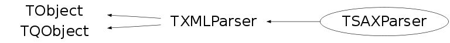

class TSAXParser: public TXMLParser
TSAXParser TSAXParser is a subclass of TXMLParser, it is a wraper class to libxml library. SAX (Simple API for XML) is an event based interface, which doesn't maintain the DOM tree in memory, in other words, it's much more efficient for large document. TSAXParserCallback contains a number of callback routines to the parser in a xmlSAXHandler structure. The parser will then parse the document and call the appropriate callback when certain conditions occur.
Function Members (Methods)
public:
| TSAXParser() | |
| virtual | ~TSAXParser() |
| void | TObject::AbstractMethod(const char* method) const |
| virtual void | TObject::AppendPad(Option_t* option = "") |
| static Bool_t | TQObject::AreAllSignalsBlocked() |
| Bool_t | TQObject::AreSignalsBlocked() const |
| static Bool_t | TQObject::BlockAllSignals(Bool_t b) |
| Bool_t | TQObject::BlockSignals(Bool_t b) |
| virtual void | TObject::Browse(TBrowser* b) |
| virtual void | TQObject::ChangedBy(const char* method)SIGNAL |
| static TClass* | Class() |
| virtual const char* | TObject::ClassName() const |
| virtual void | TObject::Clear(Option_t* = "") |
| virtual TObject* | TObject::Clone(const char* newname = "") const |
| void | TQObject::CollectClassSignalLists(TList& list, TClass* cls) |
| virtual Int_t | TObject::Compare(const TObject* obj) const |
| Bool_t | TQObject::Connect(const char* signal, const char* receiver_class, void* receiver, const char* slot) |
| static Bool_t | TQObject::Connect(TQObject* sender, const char* signal, const char* receiver_class, void* receiver, const char* slot) |
| static Bool_t | TQObject::Connect(const char* sender_class, const char* signal, const char* receiver_class, void* receiver, const char* slot) |
| virtual void | TQObject::Connected(const char*) |
| virtual void | ConnectToHandler(const char* handlerName, void* handler) |
| virtual void | TObject::Copy(TObject& object) const |
| virtual void | TObject::Delete(Option_t* option = "")MENU |
| virtual void | TQObject::Destroyed()SIGNAL |
| Bool_t | TQObject::Disconnect(const char* signal = 0, void* receiver = 0, const char* slot = 0) |
| static Bool_t | TQObject::Disconnect(TQObject* sender, const char* signal = 0, void* receiver = 0, const char* slot = 0) |
| static Bool_t | TQObject::Disconnect(const char* class_name, const char* signal, void* receiver = 0, const char* slot = 0) |
| virtual void | TQObject::Disconnected(const char*) |
| virtual Int_t | TObject::DistancetoPrimitive(Int_t px, Int_t py) |
| virtual void | TObject::Draw(Option_t* option = "") |
| virtual void | TObject::DrawClass() constMENU |
| virtual TObject* | TObject::DrawClone(Option_t* option = "") constMENU |
| virtual void | TObject::Dump() constMENU |
| void | TQObject::Emit(const char* signal) |
| void | TQObject::Emit(const char* signal, Long_t* paramArr) |
| void | TQObject::Emit(const char* signal, const char* params) |
| void | TQObject::Emit(const char* signal, Double_t param) |
| void | TQObject::Emit(const char* signal, Long_t param) |
| void | TQObject::Emit(const char* signal, Long64_t param) |
| void | TQObject::Emit(const char* signal, Bool_t param) |
| void | TQObject::Emit(const char* signal, Char_t param) |
| void | TQObject::Emit(const char* signal, UChar_t param) |
| void | TQObject::Emit(const char* signal, Short_t param) |
| void | TQObject::Emit(const char* signal, UShort_t param) |
| void | TQObject::Emit(const char* signal, Int_t param) |
| void | TQObject::Emit(const char* signal, UInt_t param) |
| void | TQObject::Emit(const char* signal, ULong_t param) |
| void | TQObject::Emit(const char* signal, ULong64_t param) |
| void | TQObject::Emit(const char* signal, Float_t param) |
| void | TQObject::EmitVA(const char* signal, Int_t nargs) |
| void | TQObject::EmitVA(const char* signal, Int_t nargs, va_list va) |
| virtual void | TObject::Error(const char* method, const char* msgfmt) const |
| virtual void | TObject::Execute(const char* method, const char* params, Int_t* error = 0) |
| virtual void | TObject::Execute(TMethod* method, TObjArray* params, Int_t* error = 0) |
| virtual void | TObject::ExecuteEvent(Int_t event, Int_t px, Int_t py) |
| virtual void | TObject::Fatal(const char* method, const char* msgfmt) const |
| virtual TObject* | TObject::FindObject(const char* name) const |
| virtual TObject* | TObject::FindObject(const TObject* obj) const |
| virtual Option_t* | TObject::GetDrawOption() const |
| static Long_t | TObject::GetDtorOnly() |
| virtual const char* | TObject::GetIconName() const |
| TList* | TQObject::GetListOfClassSignals() const |
| TList* | TQObject::GetListOfConnections() const |
| TList* | TQObject::GetListOfSignals() const |
| virtual const char* | TObject::GetName() const |
| virtual char* | TObject::GetObjectInfo(Int_t px, Int_t py) const |
| static Bool_t | TObject::GetObjectStat() |
| virtual Option_t* | TObject::GetOption() const |
| Int_t | TXMLParser::GetParseCode() const |
| const char* | TXMLParser::GetParseCodeMessage(Int_t parseCode) const |
| Bool_t | TXMLParser::GetReplaceEntities() const |
| Bool_t | TXMLParser::GetStopOnError() const |
| virtual const char* | TObject::GetTitle() const |
| virtual UInt_t | TObject::GetUniqueID() const |
| Bool_t | TXMLParser::GetValidate() const |
| const char* | TXMLParser::GetValidateError() const |
| const char* | TXMLParser::GetValidateWarning() const |
| virtual Bool_t | TObject::HandleTimer(TTimer* timer) |
| virtual Bool_t | TQObject::HasConnection(const char* signal_name) const |
| virtual ULong_t | TObject::Hash() const |
| virtual void | TQObject::HighPriority(const char* signal_name, const char* slot_name = 0) |
| virtual void | TObject::Info(const char* method, const char* msgfmt) const |
| virtual Bool_t | TObject::InheritsFrom(const char* classname) const |
| virtual Bool_t | TObject::InheritsFrom(const TClass* cl) const |
| virtual void | TObject::Inspect() constMENU |
| void | TObject::InvertBit(UInt_t f) |
| virtual TClass* | IsA() const |
| virtual Bool_t | TObject::IsEqual(const TObject* obj) const |
| virtual Bool_t | TObject::IsFolder() const |
| Bool_t | TObject::IsOnHeap() const |
| virtual Bool_t | TObject::IsSortable() const |
| Bool_t | TObject::IsZombie() const |
| static void | TQObject::LoadRQ_OBJECT() |
| virtual void | TQObject::LowPriority(const char* signal_name, const char* slot_name = 0) |
| virtual void | TObject::ls(Option_t* option = "") const |
| void | TObject::MayNotUse(const char* method) const |
| virtual void | TQObject::Message(const char* msg)SIGNAL |
| virtual Bool_t | TObject::Notify() |
| virtual Int_t | TQObject::NumberOfConnections() const |
| virtual Int_t | TQObject::NumberOfSignals() const |
| void | TObject::Obsolete(const char* method, const char* asOfVers, const char* removedFromVers) const |
| virtual void | OnCdataBlock(const char* text, Int_t len)SIGNAL |
| virtual void | OnCharacters(const char* characters)SIGNAL |
| virtual void | OnComment(const char* text)SIGNAL |
| virtual void | OnEndDocument()SIGNAL |
| virtual void | OnEndElement(const char* name)SIGNAL |
| virtual Int_t | OnError(const char* text)SIGNAL |
| virtual Int_t | OnFatalError(const char* text)SIGNAL |
| virtual void | OnStartDocument()SIGNAL |
| virtual void | OnStartElement(const char* name, const TList* attr)SIGNAL |
| virtual void | OnWarning(const char* text)SIGNAL |
| static void | TObject::operator delete(void* ptr) |
| static void | TObject::operator delete(void* ptr, void* vp) |
| static void | TObject::operator delete[](void* ptr) |
| static void | TObject::operator delete[](void* ptr, void* vp) |
| void* | TObject::operator new(size_t sz) |
| void* | TObject::operator new(size_t sz, void* vp) |
| void* | TObject::operator new[](size_t sz) |
| void* | TObject::operator new[](size_t sz, void* vp) |
| virtual void | TObject::Paint(Option_t* option = "") |
| virtual Int_t | ParseBuffer(const char* contents, Int_t len) |
| virtual Int_t | ParseFile(const char* filename) |
| virtual void | TObject::Pop() |
| virtual void | TObject::Print(Option_t* option = "") const |
| virtual Int_t | TObject::Read(const char* name) |
| virtual void | TObject::RecursiveRemove(TObject* obj) |
| void | TObject::ResetBit(UInt_t f) |
| virtual void | TObject::SaveAs(const char* filename = "", Option_t* option = "") constMENU |
| virtual void | TObject::SavePrimitive(ostream& out, Option_t* option = "") |
| void | TObject::SetBit(UInt_t f) |
| void | TObject::SetBit(UInt_t f, Bool_t set) |
| virtual void | TObject::SetDrawOption(Option_t* option = "")MENU |
| static void | TObject::SetDtorOnly(void* obj) |
| static void | TObject::SetObjectStat(Bool_t stat) |
| void | TXMLParser::SetReplaceEntities(Bool_t val = kTRUE) |
| void | TXMLParser::SetStopOnError(Bool_t stop = kTRUE) |
| virtual void | TObject::SetUniqueID(UInt_t uid) |
| void | TXMLParser::SetValidate(Bool_t val = kTRUE) |
| virtual void | ShowMembers(TMemberInspector& insp) |
| virtual void | TXMLParser::StopParser() |
| virtual void | Streamer(TBuffer& b) |
| void | StreamerNVirtual(TBuffer& b) |
| virtual void | TObject::SysError(const char* method, const char* msgfmt) const |
| Bool_t | TObject::TestBit(UInt_t f) const |
| Int_t | TObject::TestBits(UInt_t f) const |
| virtual void | TObject::UseCurrentStyle() |
| virtual void | TObject::Warning(const char* method, const char* msgfmt) const |
| virtual Int_t | TObject::Write(const char* name = 0, Int_t option = 0, Int_t bufsize = 0) |
| virtual Int_t | TObject::Write(const char* name = 0, Int_t option = 0, Int_t bufsize = 0) const |
protected:
| static Int_t | TQObject::CheckConnectArgs(TQObject* sender, TClass* sender_class, const char* signal, TClass* receiver_class, const char* slot) |
| static Bool_t | TQObject::ConnectToClass(TQObject* sender, const char* signal, TClass* receiver_class, void* receiver, const char* slot) |
| static Bool_t | TQObject::ConnectToClass(const char* sender_class, const char* signal, TClass* receiver_class, void* receiver, const char* slot) |
| virtual void | TObject::DoError(int level, const char* location, const char* fmt, va_list va) const |
| virtual void* | TQObject::GetSender() |
| virtual const char* | TQObject::GetSenderClassName() const |
| virtual void | TXMLParser::InitializeContext() |
| void | TObject::MakeZombie() |
| virtual void | TXMLParser::OnValidateError(const TString& message) |
| virtual void | TXMLParser::OnValidateWarning(const TString& message) |
| virtual void | TXMLParser::ReleaseUnderlying() |
| virtual void | TXMLParser::SetParseCode(Int_t code) |
private:
| TSAXParser(const TSAXParser&) | |
| TSAXParser& | operator=(const TSAXParser&) |
| virtual Int_t | Parse() |
Data Members
public:
| enum TObject::EStatusBits { | kCanDelete | |
| kMustCleanup | ||
| kObjInCanvas | ||
| kIsReferenced | ||
| kHasUUID | ||
| kCannotPick | ||
| kNoContextMenu | ||
| kInvalidObject | ||
| }; | ||
| enum TObject::[unnamed] { | kIsOnHeap | |
| kNotDeleted | ||
| kZombie | ||
| kBitMask | ||
| kSingleKey | ||
| kOverwrite | ||
| kWriteDelete | ||
| }; |
protected:
| _xmlParserCtxt* | TXMLParser::fContext | parse the xml file |
| TList* | TQObject::fListOfConnections | ! list of connections to this object |
| TList* | TQObject::fListOfSignals | ! list of signals from this object |
| Int_t | TXMLParser::fParseCode | to keep track of the errorcodes |
| Bool_t | TXMLParser::fReplaceEntities | replace entities |
| Bool_t | TQObject::fSignalsBlocked | ! flag used for suppression of signals |
| Bool_t | TXMLParser::fStopError | stop when parse error occurs |
| Bool_t | TXMLParser::fValidate | to validate the parse context |
| TString | TXMLParser::fValidateError | parse error |
| TString | TXMLParser::fValidateWarning | parse warning |
| static Bool_t | TQObject::fgAllSignalsBlocked | flag used for suppression of all signals |
Class Charts
{kind=link}
{kind=link}
{kind=link}
{kind=link}

Function documentation
void OnStartElement(const char* name, const TList* attr)
Emit a signal for OnStarElement, where name is the Element's name and attribute is a TList of (TObjString*, TObjString *) TPair's. The TPair's key is the attribute's name and value is the attribute's value.
void OnEndElement(const char* name)
Emit a signal for OnEndElement, where name is the Element's name.
void OnCharacters(const char* characters)
Emit a signal for OnCharacters, where characters are the characters outside of tags.
Int_t OnError(const char* text)
Emit a signal for OnError, where text is the error and it returns the Parse Error Code, see TXMLParser.
Int_t OnFatalError(const char* text)
Emit a signal for OnFactalError, where text is the error and it returns the Parse Error Code, see TXMLParser.
Int_t Parse()
This function parses the xml file, by initializing the parser and checks whether the parse context is created or not, it will check as well whether the document is well formated. It returns the parse error code, see TXMLParser.
Int_t ParseFile(const char* filename)
It creates the parse context of the xml file, where the xml file name is filename. If context is created sucessfully, it will call Parse() It returns parse error code, see TXMLParser.
Int_t ParseBuffer(const char* contents, Int_t len)
It parse the contents, instead of a file. It will return error if is attempted to parse a second file while a parse is in progres. It returns parse code error, see TXMLParser.
void ConnectToHandler(const char* handlerName, void* handler)
A default TSAXParser to a user-defined Handler connection function. This function makes connection between various function from TSAXParser with the user-define SAX Handler, whose functions has to be exactly the same as in TSAXParser. handlerName is the user-defined SAX Handler class name handler is the pointer to the user-defined SAX Handler See SAXHandler.C tutorial.
TSAXParser(const TSAXParser& )
TSAXParser& operator=(const TSAXParser& )